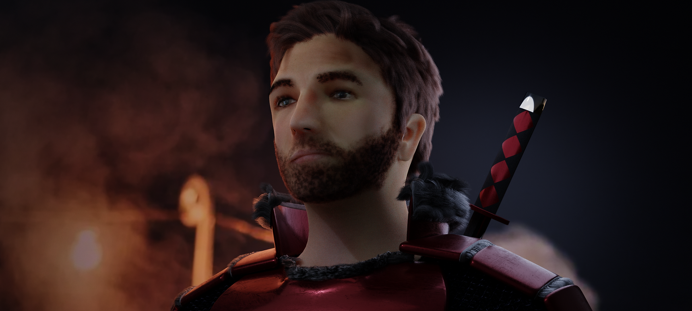
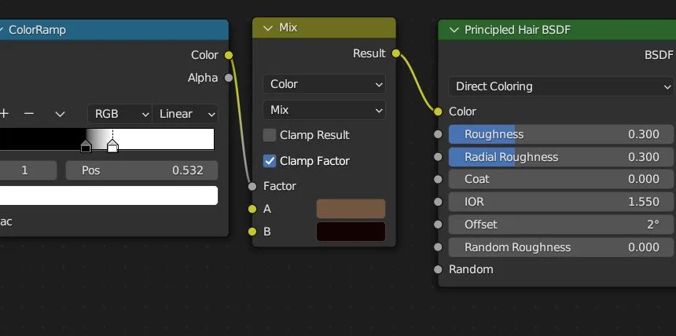

3D Face process
For this project we had ten weeks to reproduce our face in 3D to then animate it. This was a very tough project for me as it was my first time for multiple steps. I had to learn hair, sculpting, topology and rigging to be able to complete this project and reach the expectations given.
Some of my research and inspirations :

Armor Moodboard

Beard Moodboard

Face Reference Moodboard

Fur for Armor Moodboard

Sword Moodboard

Topology Moodboard

Research Sketches

3D Scan

Beginning of Topology

First Topology

Adding the Head

Head and Ear Finalised

Mirrored for Other Half
: Scan and first tries

The First Step After doing the 3D scan was to start working on the retopology. As the scan was too dence and had triangle shapes instead of squares, it would have been difficult to work with for animation and texturing later on. As a result we had to make a much simpler model using retopology. It was very difficult for me as my face isn't symetrical at all and I had a hard time understanding how to layout logically the squares. Once I copied the first half my face seemed very off to a point where I didn't know where to start sculpting as it was my first time doing it too.
Sculpting :

View Without Original Scan

Topology Details

First ShoulderSculpt

Assempled in one Mesh the two Sides

First Experience With Hair

Basic Haircut Made

After retopology, and sculpting, I began working on hair and texturing. I was quite worried at first about hair as it was the first time I was doing it and didn't know how it worked. However I think I understood efficiently how to work with hair and place them in the right direction, the right length and the right density.
The next step was to add texture to the model and to start modeling the armor that was going to be on me. I had a hard time understanding how to apply texture paint properly because of an issue in the settings that I didn't find early on. It was also difficult to texture paint the right areas and make the transitions natural with the different shades that were on the image. When I started modeling the armor, I wanted to have a lot of details such as chainmail but the first method I uded was array and it made the model way too heavy for use. After a couple of days I found an optimal solution that was to loop the shape on a cloth and use the collision on my body to make it just drop on me properly. The armor I designed is based on japanese and chinese style that I really liked and saw during past journeys.
Modeling :

Texturing and Roughness

First Attempt of Chainmail

Too Complex Mesh

Solution Cloth and Collision

Cutout for the Right Size

Let Drop on Shoulders

Texturing Armor

Armor Details Refined
: Continuation of work on the armor
Work on the face :

Beginning of Skin Texture

Texture Progress

Color Correction

Eye Textured

Chest Plate Designed

Fur Added to Armor
: Work on the chestplate and some details
Work on the swords :

Swords Added to the Back

Sword Texturing

Texture Details

Final Version Before Presentation and Feedback

Face Sculpt After Feedback

New Grip and Hand Guard

New Leather Base

Face Refined Sculpt
: Following initial feedback on a presentation I was able to correct certain things
All I had to do was adjust a few final minor and technical adjustments :

Shape Keys List

Rigging Layout

Final Face Comparison
Second Comparison

Final Environment
The final step before animating was setting up the shape keys and the drivers. It was very difficult for me at first as I wasn't using the right tools at first to change the shape of my face. Installing the drivers and rigging was quite simple once I memorised the process and used the right tools. With all of this set up, I started animating my model and it was very difficult at first to understand how to make the movements seem natural and the main reason for that was to have the proper speed and synchronisation between every movement. As I continued animating I understood more about the timings and started also thinking of sound effects I could use once the animation is rendered to have a more convincing result. Once I had the raw animation I also started playing around with the noise modifier in the graph editor to add some more unpredictable movements that would seem human. After recieving some feeback, I have been told that there was too many movement going on without any breaks where my head would be staying at the same spot. To lighten the animation and make it more natural I added some keyframes that made the head movements more suttle.
See review ...